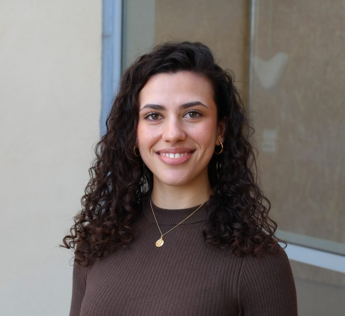

Susanna
PiquerData Science student building machine learning systems in PyTorch, Go, and Python — from research to production.

"I care about the part of AI work that isn't the model."
I'm a senior Data Science student at Universitat Politècnica de València (ETSINF), currently spending my final year as an exchange student at the University of Illinois Urbana-Champaign, Grainger College of Engineering. Before that, I spent a year running my own cybersecurity startup and building agentic AI features in production at a fintech.
What ties it together: I like systems that are auditable, not just accurate. At the fintech where I worked this summer, some of my most useful work wasn't a model — it was tracking down a subtle data-access bug and shipping the fix with tests to make sure it stayed fixed.
Outside of engineering: former treasurer of ACM UPV and organizer of a 70-person tech leadership summit for CDTM Valencia. I tend to take on more than one thing at a time — it's the environment I perform best in.
Where I've worked
- Built AI cloud infrastructure and backend logic in Go and Python for a fintech's advisor-facing platform.
- Rewrote core backend services in Go, replacing a legacy stack under live production traffic.
- Shipped LLM-based reasoning pipelines that now run in production.
Valencia, ES
- Took a deep-tech cybersecurity project from prototype to a legally constituted startup.
- Pitched at Valencia Digital Summit and won 1st place in the Cybersecurity Startup Program 2025.
Valencia, ES
- Selected for a competitive honors program in technology management, run alongside regular coursework.
- Advised Improven on a data strategy project for a corporate client, applying Agile methods.
- Ran a healthcare technology trend seminar with IMED Hospitales for executive board members.
- Organized the CDTM Tech Leaders Summit, an invite-only 70-person event connecting founders, corporates, and investors.
Valencia, ES
Selected work
A PyTorch model that reads financial time series and flags the moment the market's underlying behavior shifts — the kind of change that often precedes a crash. It pairs convolutional layers (Conv1D) with a bidirectional LSTM (a network built to remember patterns over time), trained to solve two problems at once — how erratically prices are moving, and which market regime they're in — with a Bayesian layer that also reports its own confidence.
Built to compete in EXIST 2026, an international shared task on detecting sexism in social media. CAS-Net (Context-Aware Sensorial Network) combines a language model (XLM-RoBERTa) with an image-and-text model (CLIP) and physiological signals, weighing each source through a Gated Fusion mechanism — plus a RAG module that retrieves supporting evidence before predicting, so the output stays traceable instead of a black box.
Four linked Tableau views tracking pollution patterns using data from AEMET, Spain's national weather agency, plus dashboards built in R with Plotly and ggplot.
Scrapes and compares live retailer pricing (Selenium, BeautifulSoup) through a Flask backend and a Chart.js dashboard.
A Random Forest classifier tuned for noisy, imbalanced clinical data, validated with 5-fold cross-validation to avoid overfitting.
A hybrid system pairing a relational database (Oracle SQL) with two NoSQL databases — Cassandra for large-scale data, Neo4j for mapping relationships between assets — with automated triggers enforcing data security.
What I build with
Languages
- Python
- R
- SQL
- Go
- Java
Data Science & AI
- Machine Learning
- Deep Learning
- NLP
- Computer Vision
- RAG
Cloud & Tooling
- AWS
- Docker
- PyTorch
- MLflow
- Streamlit
Data & BI
- Tableau
- Power BI
- Oracle SQL
- Cassandra
- Neo4j
Academic background
Let's talk.
Reach out about roles, research collaborations, or just to say hi.